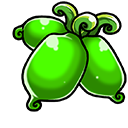

ITEM 038
초록 개다래 열매
진화 재료냥코를 더욱 강하게 클래스 체인지 시킬 수 있는 환상의 개다래나무의 열매
요구 캐릭터
아이템 합성 · 교환
획득 가능 스테이지
1회 한정 보상 일괄
통솔력 소모 스테이지
아이템 소모 스테이지
등록된 획득 스테이지가 없습니다.

냥코를 더욱 강하게 클래스 체인지 시킬 수 있는 환상의 개다래나무의 열매
등록된 획득 스테이지가 없습니다.